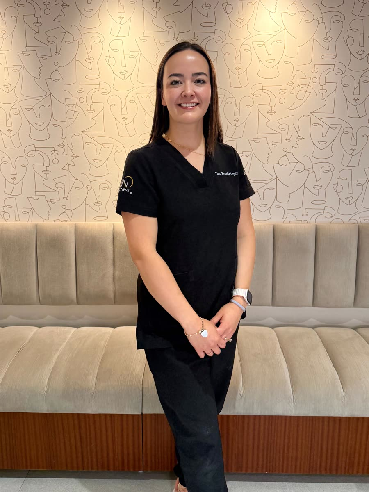
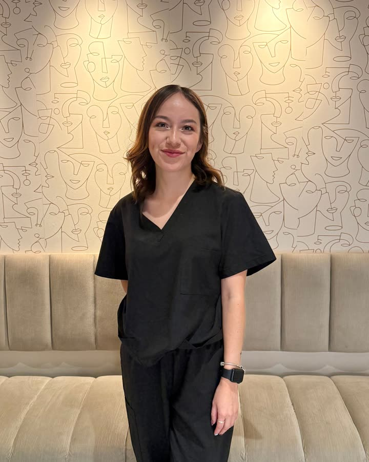
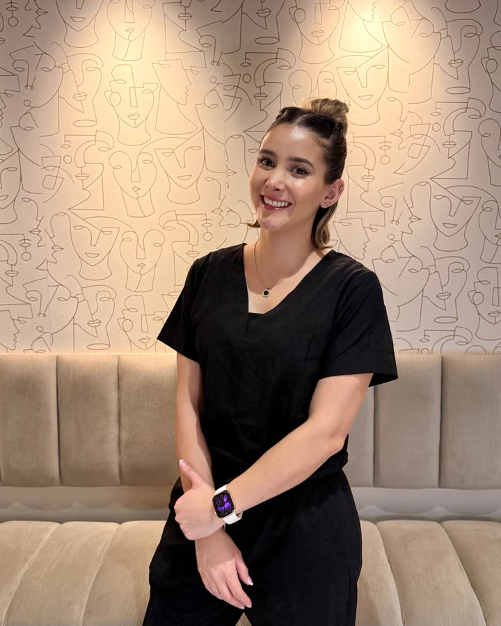
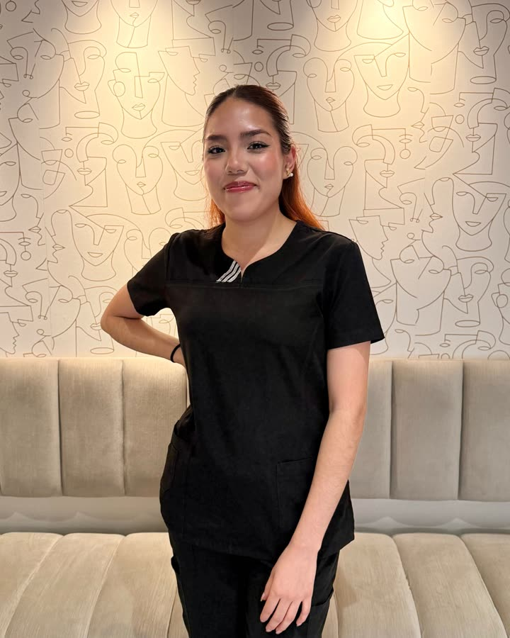
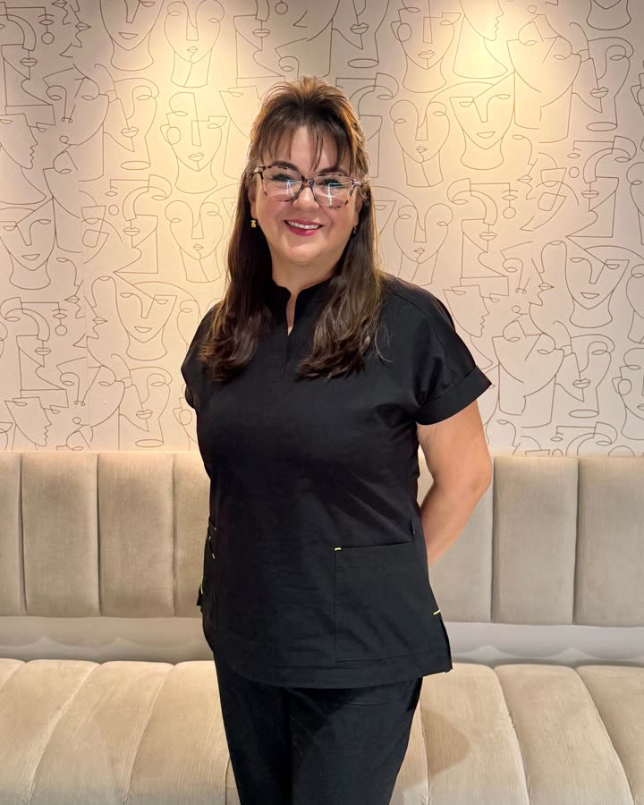
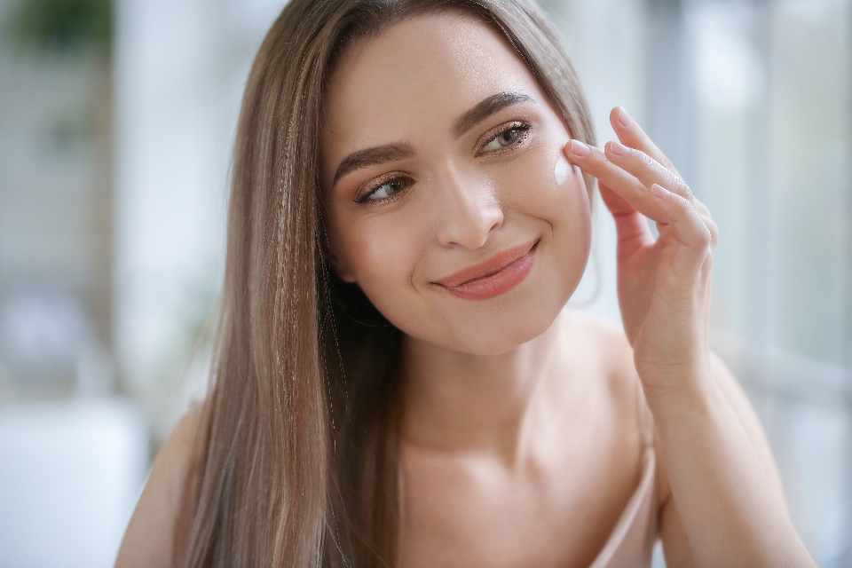
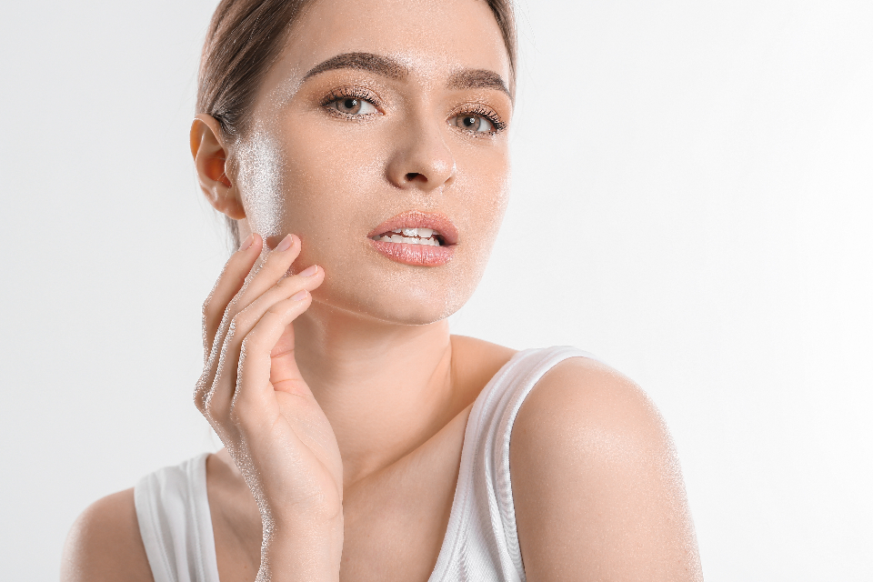
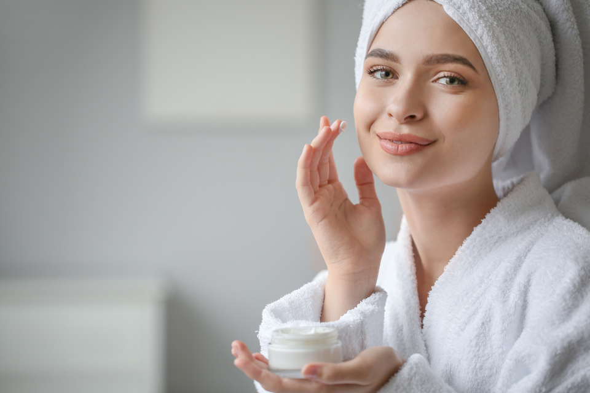

Belleza que se ve natural porque se diseñó para ti.
En Skin Rejuveness no aplicamos un tratamiento: evaluamos, diagnosticamos y diseñamos un plan para tu piel y tu cuerpo. Medicina estética con resultados naturales, sin bisturí, sin dolor y sin tiempo de recuperación.
Lo que más se repite en sus reseñas: explicaciones detalladas, dedicación durante la visita e instalaciones excelentes.
"La Dra. y su equipo son muy amables. El lugar está precioso. Tiene un conocimiento completo de cada una de las áreas que maneja. La Dra. muy dedicada a la consulta, toma en cuenta cada detalle que le dices a la hora de hacer tu historia clínica. La verdad me sentí muy bien, atendida por una muy buena profesional y ser humano."
"Me encanta venir con la Dra. a mi tratamiento de Endolyse porque no solo me encantó el resultado inicial sino también el acompañamiento y seguimiento, todo excelente."
"La doctora es muy cálida, inspira confianza, dedica tiempo a explicar claramente en qué consiste el tratamiento, las zonas en las que aplicaría, pregunta y escucha lo que el paciente desea. Todo en un consultorio divino, muy a gusto. De verdad salí muy satisfecha. La recomiendo ampliamente."
"La doctora es muy profesional, me explicó con detalle el procedimiento, riesgos y cuidados posteriores. Su trato fue bastante amable, continuaré el tratamiento con ella."
"Tratamiento de enzimas en rostro, mil puntos. Súper profesional y monitoreando siempre cómo se siente el paciente."
"Excelente doctora. Humana, diligente, te explica todo paso a paso y no le molesta repetir. Te hace sentir seguro y escuchado."
Aplicamos pruebas genéticas enfocadas en nutrición y salud de la piel para entender cómo responde tu organismo antes de decidir cualquier protocolo. En lugar de probar tratamientos hasta que uno funcione, partimos de tus características reales. Es la diferencia entre un plan genérico y un plan que es tuyo.
Valoración$1,500 MXN · Historia clínica completa y plan personalizado
Presencial o en líneaEn el consultorio de San Jerónimo o por videoconsulta
HorarioLunes a viernes de 10:00 a 19:00 hrs · Sábados de 08:00 a 14:00 hrs
UbicaciónPeriférico Sur 3443, San Jerónimo Lídice, CDMX

Nuestro equipo
Dra. Brenda López Carmona
Fundadora · Médica estética · Especialista en obesidad y longevidad
Médica egresada de la Universidad Anáhuac México, con Maestría en Medicina Estética y Obesidad por el Instituto Panamericano de Profesionales Científicos y Doctorado en Desarrollo Humano por la Universidad Motolinía. Es docente en el IPPC, donde forma a otros médicos estéticos.
Fundó Skin Rejuveness como un centro médico integral: un lugar donde la formación médica se combina con un enfoque personalizado, orientado al bienestar, la prevención y el embellecimiento natural.
Su trabajo se concentra en el rejuvenecimiento no invasivo, el manejo de la adiposidad localizada y la aplicación de pruebas genéticas enfocadas en nutrición y salud de la piel, para diseñar tratamientos individualizados según las características reales de cada paciente.
Médica cirujana, Universidad Anáhuac México
Maestría en Medicina Estética y Obesidad, IPPC
Doctorado en Desarrollo Humano, Universidad Motolinía
Docente en el IPPC, forma a otros médicos estéticos
Escuela de la Unión Internacional de Medicina Estética · Certificación BLS
Atiende en español, inglés y japonés
Y el equipo que te acompaña en cada visita.




El consultorio
Un consultorio pensado para que estés cómoda.
Nuestros pacientes lo mencionan una y otra vez: el lugar está precioso. Un centro médico en San Jerónimo diseñado para que un procedimiento no se sienta como un procedimiento.
Cabinas privadas, material estéril y equipo de grado médico.
En San Jerónimo Lídice, La Magdalena Contreras, con estacionamiento cerca.
Atención de una sola paciente a la vez, sin sala llena ni prisas.
Pasa el cursor o toca cada tarjeta para ver la respuesta.

Mito
“El bótox te deja la cara congelada.”
Ver respuesta
Verdad
Se congela cuando la dosis es genérica. Aquí se calcula músculo por músculo, en tu valoración, para que el gesto siga siendo tuyo.

Mito
“Los bioestimuladores son lo mismo que un relleno.”
Ver respuesta
Verdad
El relleno agrega volumen desde el primer día. El bioestimulador hace que tu propia piel produzca colágeno durante meses. Son objetivos distintos.
Mito
“Esto es solo para tapar arrugas.”
Ver respuesta
Verdad
Buena parte de la consulta es calidad de piel: manchas, textura, hidratación y prevención. Empezar a tiempo suele pedir mucho menos después.

Mito
“Si a mi amiga le funcionó, a mí también.”
Ver respuesta
Verdad
La piel responde según genética, hábitos y hormonas. Por eso el protocolo se decide después de valorarte, y a veces con pruebas genéticas de por medio.
Contenido educativo. Nada reemplaza una valoración presencial.
Resuelve tus dudas
Preguntas frecuentes.
Ambos son toxina botulínica y relajan el músculo para suavizar líneas de expresión. Cambian el tiempo de inicio del efecto y la difusión del producto. En tu valoración definimos cuál conviene según tu zona a tratar y tus objetivos.
Ese es el objetivo. Trabajamos con dosis y volúmenes pensados para que tus gestos sigan siendo tuyos. No buscamos un rostro "hecho", buscamos que se note que descansaste.
Es un regenerador que estimula la reparación de la piel y mejora hidratación, textura y luminosidad. Es uno de los tratamientos más solicitados actualmente y funciona muy bien combinado con una rutina de skincare adecuada.
Sí. Con Endolyse y enzimas lipolíticas tratamos adiposidad localizada sin bisturí, sin dolor y sin tiempo de recuperación. Los resultados dependen de la zona, de la cantidad de sesiones y de tu seguimiento.
Productos como Sculptra, Radiesse o Profhilo que no rellenan: hacen que tu propia piel produzca colágeno. El resultado aparece de forma progresiva y se ve más firme y luminosa, no más "llena".
Algunos sí y otros no. Hay ingredientes y procedimientos que se deben suspender por completo durante esta etapa. Agenda una valoración y armamos una rutina segura para ti y tu bebé.
Lo suficiente para hacer historia clínica completa, revisar tu piel, escuchar qué buscas y explicarte el plan, los riesgos y los cuidados posteriores. No trabajamos con consultas de cinco minutos.
Sí. Ofrecemos videoconsulta además de la consulta presencial en San Jerónimo.
Efectivo en pesos mexicanos (MXN) y dólares (USD), transferencia, tarjeta de crédito y tarjeta de débito. Atención exclusivamente privada, sin aseguradoras.
Dónde encontrarnos
San Jerónimo, Ciudad de México.
Dirección
Periférico Sur 3443 San Jerónimo Lídice, La Magdalena Contreras Ciudad de México, C.P. 10200 Cómo llegar